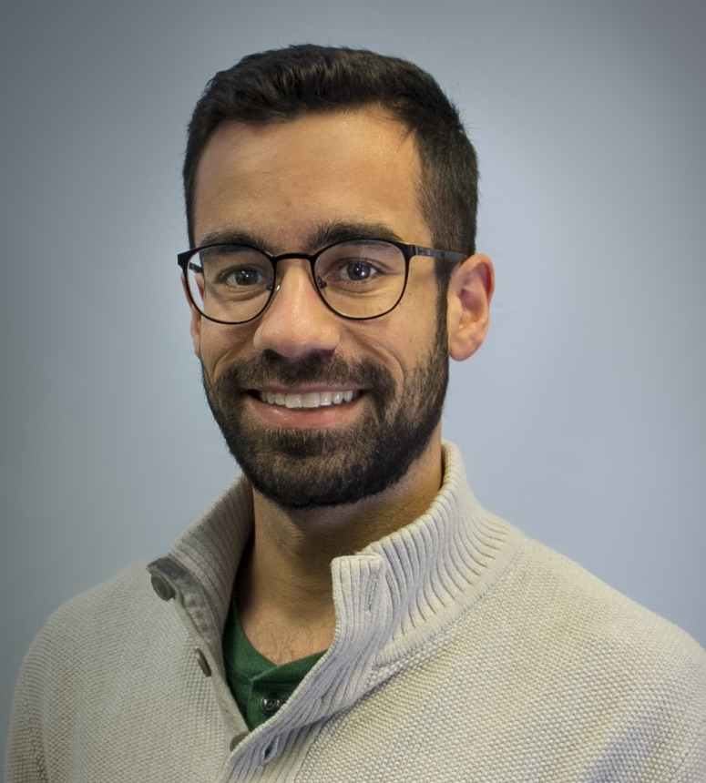

Mahmood Sharif

Hi!
I am a Ph.D. student in the ECE department at Carnegie Mellon University. I'm also part of CyLab. My research interests are in the areas of computer security and privacy, machine learning, human factors, and online anonymity and censorship.
I'm fortunate to be advised by Lujo Bauer and Nicolas Christin.
Before joining CMU, I received my B.Sc. (via the Etgar/"Challenge" program) and M.Sc. (summa cum laude) degrees in computer science from the University of Haifa.
News
Jun '19: Had the pleasure to present our WPES 2018 work at PrivacyCon.
May '19: Excited to visit Glasgow for CHI 2019.
Mar '19: Paper accepted to ACM TOPS.
Feb '19: Please consider submitting papers to CSET and EuroUSEC 2019.
Jan '19: Paper accepted to CHI 2019.
Sep '18: Honored to be a CyLab Presidential Fellow for the year 2018/19.
Aug '18: Papers accepted to CCS and WPES.
Jul '18: Had a great time chatting about Adversarial Machine Learning with Hugh Thompson at RSA Asia Pacific & Japan.
Jun '18: I'm on the PC of WPES. Please consider submitting!
May '18: Spending the summer as an intern at Symantec.
Apr '18: Paper accepted to CV-COPS (a CVPR workshop).
Feb '18: Honored to receive the Symantec Research Labs Fellowship.
Feb '18: I'm on the PC of EuroUSEC and NLP4IF. Please consider submitting!
Jan '18: Excited to join the Oakland Student PC meeting in NY!
Nov '17: Paper accepted to NDSS 2018.
Sep '17: Participating in the Adversarial Machine Learning Workshop.
Jun '17: Spending a week in France for FADEx 2017.
Publications
-
M. Sharif, S. Bhagavatula, L. Bauer, M. Reiter. "A General Framework for Adversarial Examples with Objectives." In ACM TOPS, 2019.
[PDF | arXiv | BIB | CODE | DEMO]
-
M. Sharif, K. A. Roundy, M. Dell'Amico, C. Gates, D. Kats, L. Bauer, N. Christin. "A Field Study of Computer-Security Perceptions Using Anti-Virus Customer-Support Chats." In Proc. CHI, 2019.
[PDF | AUX | BIB]
-
M. Sharif, J. Urakawa, N. Christin, A. Kubota, A. Yamada. "Predicting Impending Exposure to Malicious Content from User Behavior." In Proc. CCS, 2018.
[PDF | BIB | CODE | VID]
-
J. Tan, M. Sharif, S. Bhagavatula, M. Beckerle, L. Bauer, M. Mazurek. "Comparing Hypothetical and Realistic Privacy Valuations." In Proc. WPES, 2018.
[PDF | BIB]
-
M. Sharif, L., Bauer, M. Reiter. "On the Suitability of $L_p$-norms for Creating and Preventing Adversarial Examples." In Proc. CV-COPS (CVPRW), 2018.
[PDF | BIB | arXiv]
-
W. Melicher, A. Das, M. Sharif, L. Bauer, L. Jia. "Riding Out DOMsday: Toward Detecting and Preventing DOM Cross-Site Scripting." In Proc. NDSS, 2018.
[PDF | BIB]
-
Y. Sawaya*, M. Sharif*, N. Christin, A. Kubota, A. Nakarai, A. Yamada. "Self-Confidence Trumps Knowledge: A Cross-Cultural Study of Security Behavior." In Proc. CHI, 2017.
[PDF | AUX | BIB]
-
Z. Weinberg, M. Sharif, J. Szurdi, N. Christin. "Topics of Controversy: An Empirical Analysis of Web Censorship Lists." In PoPETS, 2017.
[PDF | BIB]
-
M. Sharif, S. Bhagavatula, L. Bauer, M. Reiter. "Accessorize to a Crime: Real and Stealthy Attacks on State-of-the-Art Face Recognition." In Proc. CCS, 2016.
[PDF | BIB | CODE | VID]
-
W. Melicher, M. Sharif, J. Tan, L. Bauer, M. Christodorescu, P. G. Leon. "(Do Not) Track Me Sometimes: Users' Contextual Preferences for Web Tracking." In PoPETS, 2016.
[PDF | BIB]
More info can be found on my DBLP, Google Scholar, and ResearchGate pages.
* Equal Contribution.
Service
I have/had the pleasure to serve on the following program committees:
- European Workshop on Usable Security (2018, 2019).
- IEEE Symposium on Security and Privacy (S&P) Student PC (2018).
- Workshop on Cyber Security Experimentation and Test (2019).
- Workshop on NLP for Internet Freedom (2018, 2019).
- Workshop on Privacy in the Electronic Society (2018).
Misc
I enjoy playing different kinds of sports (mainly soccer, but also squash, basketball, volleyball, softball, and others). Feel free to send me a challenge or invite me to join a game sometime :-)
Contact
Email address: firstname + first character of lastname [at] cmu dot edu
You can also find me at my desk:
2131B, Collaborative Innovation Center
4720 Forbes Ave, Pittsburgh, PA 15213